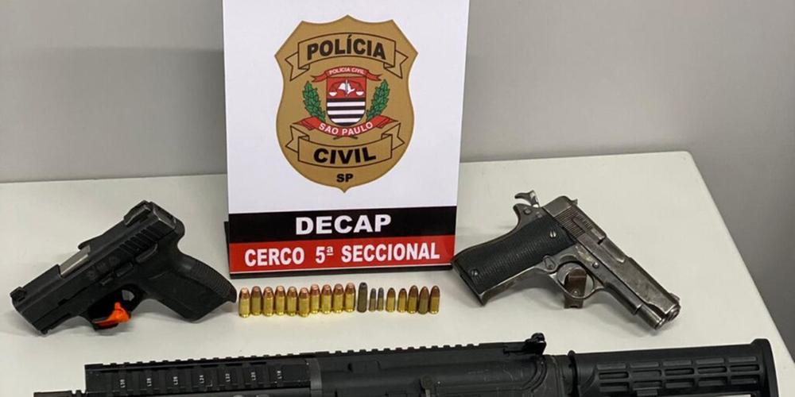
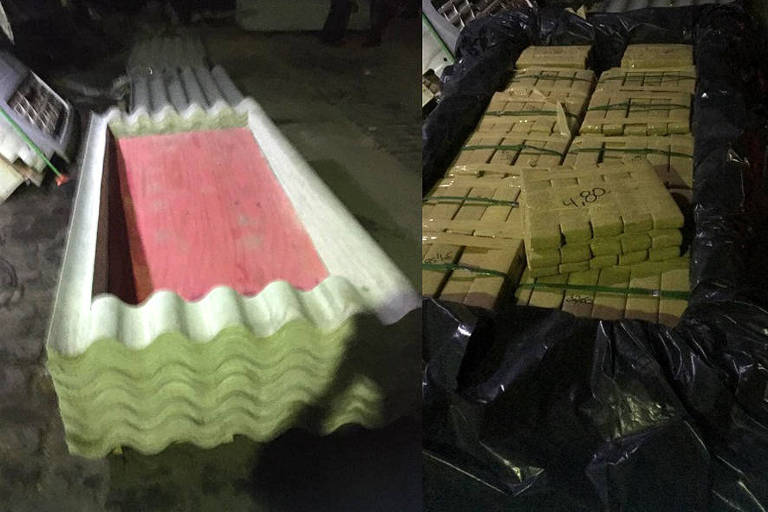
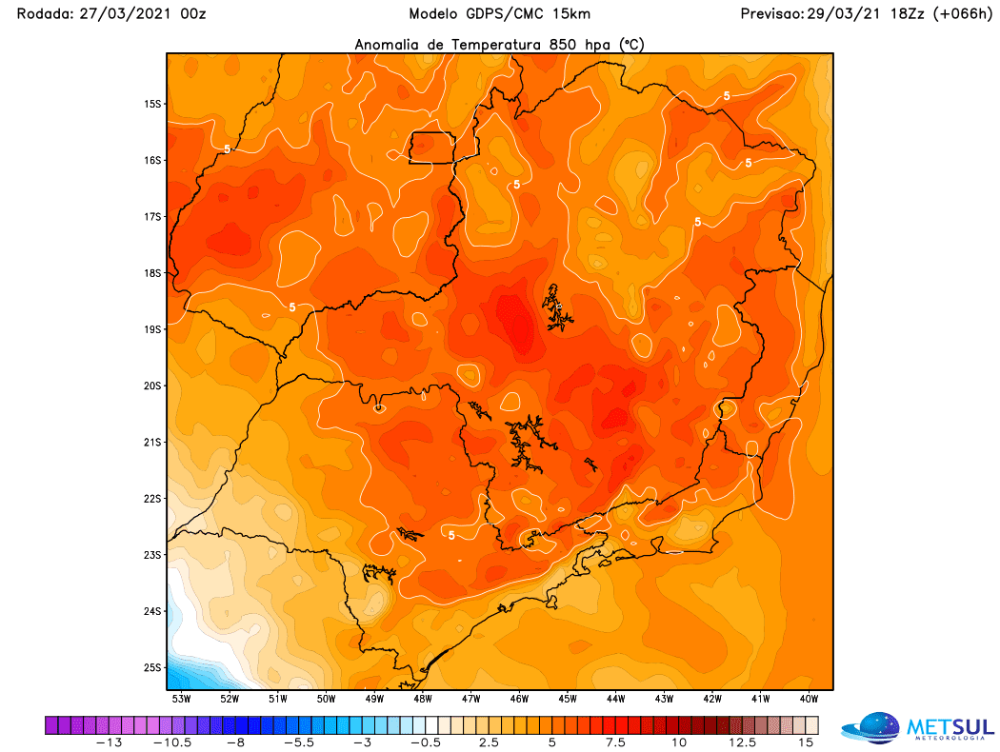

Notícias Recentes.
Integrantes de facção criminosa são presos com 3 armas de fogo
Policiais civis da Central Especializada de Repressão a Crimes e Ocorrências Diversas, da 5ª Delegacia Seccional de Polícia (Cerco/Decap), prenderam dois homens pelo comércio ilegal de arma de fogo. A ação ocorreu na quinta-feira (15), em um estabelecimento comercial, na rua Doutor Abelardo da Cunha Lobo, no Campo Limpo, na zona sul de São Paulo.

Ver noticia
Comando Vermelho entra em disputa com PCC após expandir atuação para o interior de São Paulo
O Comando Vermelho, a maior facção criminosa do Rio de Janeiro, está expandindo a sua área de atuação para o interior de São Paulo, local de influência do Primeiro Comando da Capital (PCC), gerando uma disputa entre as facções criminosas.
Ver noticia
Polícia apreende 1,3 tonelada de droga escondida em carregamento de telhas na Grande SP
Para compartilhar esse conteúdo, por favor utilize o link https://agora.folha.uol.com.br/sao-paulo/2021/03/policia-apreende-13-tonelada-de-droga-escondida-em-carregamento-de-telhas-na-grande-sp.shtml ou as ferramentas oferecidas na página. Textos, fotos, artes e vídeos da Folha estão protegidos pela legislação brasileira sobre direito autoral. Não reproduza o conteúdo do jornal em qualquer meio de comunicação, eletrônico ou impresso, sem autorização da Folhapress (pesquisa@folhapress.com.br). As regras têm como objetivo proteger o investimento que a Folha faz na qualidade de seu jornalismo. Se precisa copiar trecho de texto da Folha para uso privado, por favor logue-se como assinante ou cadastrado.

Ver noticia
Frente fria alcança São Paulo no começo da semana
Uma frente fria quebrará o bloqueio atmosférico e, finalmente, trará características de outono para São Paulo. Os paulistanos, assim, vão experimentar dias muito mais agradáveis depois de um início de outono com calor.

Ver noticia